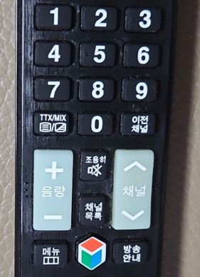
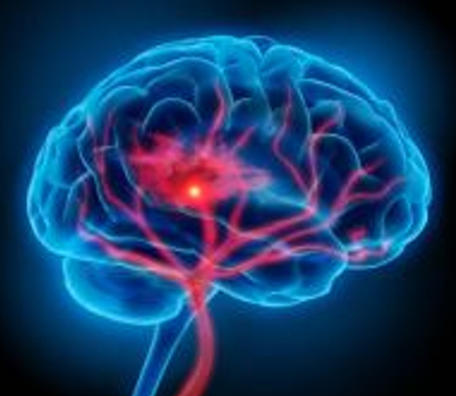

인지이론(Cognitive Theory)은 인간의 행동과 정서 반응을 설명하는 데 있어 내면의 사고(cognition), 신념(beliefs), 기대(expectations), 해석(perception)등의 인지적 과정을 핵심 변수로 삼는 심리학적 접근이다. 이 이론은 1950년대 이후 행동주의의 자극-반응(S-R) 모델이 인간의 복잡한 심리 현상을 충분히 설명하지 못한다는 비판에서 출발하여, 인간을 능동적 정보처리자(active information processor)로 이해하는 방향으로 전환되었다.
인지이론은 인간의 정서와 행동이 외부 자극 자체보다는 그것을 어떻게 해석하고 평가하는가에 달려 있다고 본다. 예를 들어, 동일한 상황에서도 어떤 사람은 위협으로, 다른 사람은 도전으로 인식할 수 있으며, 그에 따라 전혀 다른 정서 반응과 행동 전략이 나타난다. 이는 인간의 정서적 고통이 현실 그 자체보다 그 현실에 대한 왜곡된 사고(distorted thinking)에서 비롯될 수 있음을 시사한다.

이론적 배경은 이후 인지치료(Cognitive Therapy), 인지행동치료(Cognitive Behavioral Therapy, CBT), 정보처리이론(Information Processing Theory), 메타인지 이론(Metacognitive Theory)등으로 발전하였다. 특히 Beck(1976)은 우울증 환자의 사고 패턴에서 나타나는 자동적 사고(automatic thoughts), 인지적 오류(cognitive errors), 핵심 신념(core beliefs)의 왜곡이 주요한 병리적 요인임을 제시하고, 이를 재구성함으로써 정서 문제를 완화할 수 있다고 주장하였다. 인지적 접근이 불안, 강박, 분노, 자기비난 등의 정서적 고통을 비판이 아닌 이해의 대상으로 바라보고, 현실 검증을 통해 점진적 인지 재구성을 도모할 수 있는 안전한 상담 기제로 기능한다.
1) 인지 구조와 도식(Schema)
인지이론에서 인간은 정보를 단순히 수동적으로 받아들이는 존재가 아니라, 기존의 인지 구조(cognitive structure)를 통해 세상을 해석하는 능동적 존재로 이해된다. 피아제(Piaget, 1952)는 이를 도식(schema)라는 개념으로 설명하였다. 도식은 환경 자극을 조직하고 해석하는 내적 틀이며, 새로운 경험은 기존 도식과의 상호작용을 통해 동화(assimilation)되거나 조절(accommodation)된다. 이는 발달과 학습의 핵심 기제로 작용한다.
2) 자동적 사고(Automatic Thoughts)
인지이론에서 불안, 우울, 분노와 같은 정서는 외부 사건 자체가 아니라 그것에 대한 개인의 사고와 해석에 의해 결정된다. Beck(1976)은 사람들이 무의식적이고 자동적으로 떠오르는 왜곡된 사고—즉, 자동적 사고가 부정적 정서를 유발한다고 주장하였다. 예를 들어 시험에서 낮은 점수를 받은 학생이 “나는 실패자야”라고 자동적으로 해석한다면, 우울감과 무가치감을 경험하게 된다.
3) 인지 왜곡(Cognitive Distortions)
인지 왜곡은 현실을 부정확하게 해석하거나 왜곡하는 사고 패턴으로, 정서적 고통과 부적응적 행동을 야기한다. Beck(1979)과 Ellis(1962)는 다양한 유형의 왜곡을 제시하였다. 대표적인 유형으로는 이분법적 사고(black-and-white thinking), 과잉 일반화(overgeneralization), 재앙화(catastrophizing), 개인화(personalization)등이 있다. 이러한 왜곡된 사고를 교정하는 것이 인지치료의 핵심이다.
4) 핵심 신념(Core Beliefs)과 중간 신념(Intermediate Beliefs)
Beck의 인지 모델에서 핵심 신념은 자신, 타인, 세상에 대한 근본적인 신념을 의미한다(예: “나는 사랑받을 가치가 없다”). 이 핵심 신념은 구체적 상황에서 중간 신념(태도, 규칙, 가정)을 형성하며, 이는 다시 자동적 사고로 연결된다. 따라서 인지치료에서는 자동적 사고를 탐색하고 그 근원에 있는 핵심 신념을 수정하는 과정을 통해 내담자의 정서적 회복을 돕는다.

인지이론의 의의는 정신건강 문제를 정신병리의 결핍이나 이상으로 환원하지 않고, 비합리적 신념과 왜곡된 해석이라는 인지적 패턴의 변화 가능성에 주목함으로써, 자기 효능감과 주체성을 회복할 수 있는 심리학적 토대를 제공한다는 점에 있다(Ellis, 1962). 인지이론은 인간이 자신의 사고를 자각하고 수정할 수 있다는 가능성을 전제로 하며, 이는 개인의 자기 인식(self-awareness), 자아 통제력(self-regulation), 회복탄력성(resilience)을 강화하는 데 핵심 역할을 한다.
또한, 인지적 접근은 실증 연구가 가능하고, 구조화된 개입 전략을 제공하기 때문에 임상 현장에서 활용도가 높다. 특히 인지행동치료는 우울증, 불안장애, 외상 후 스트레스장애(PTSD), 섭식장애, 중독 등 다양한 정신건강 문제에 대해 치료 효과가 입증된 방법으로, 미국심리학회(APA, 2013)와 세계보건기구(WHO)에서도 권장되는 표준 치료 기법 중 하나이다.
이처럼 인지이론은 정신건강에 대한 이해를 행동이나 무의식의 단순 결과가 아닌, 사고와 신념의 구조적 패턴으로 설명함으로써, 인간 내면의 변화 가능성을 과학적이면서도 인간적인 방식으로 설명하는 데 기여하고 있다.
2023.10.13 - [특수장애] - 지적장애 의의 및 정의 - 정서장애와 행동장애 동반 가능성
지적장애 의의 및 정의 - 정서장애와 행동장애 동반 가능성
지적장애의 의의 지지적장애는 개인의 지능 및 적응 행동 기능이 평균보다 현저히 낮아 일상생활에서 여러 문제를 경험하는 상태를 말한다. 적장애는 생물학적, 환경적 요인으로 인해 개발 초
think-sis.co.kr